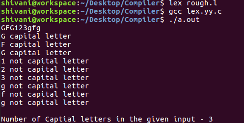

FLEX (fast lexical analyzer generator) is a tool/computer program for generating lexical analyzers (scanners or lexers) written by Vern Paxson in C around 1987. It is used together with Berkeley Yacc parser generator or GNU Bison parser generator. Flex and Bison both are more flexible than Lex and Yacc and produces faster code.
Bison produces parser from the input file provided by the user. The function yylex() is automatically generated by the flex when it is provided with a .l file and this yylex() function is expected by parser to call to retrieve tokens from current/this token stream.
Note: The function yylex() is the main flex function which runs the Rule Section and extension (.l) is the extension used to save the programs.
Installing Flex on Ubuntu:
sudo apt-get update sudo apt-get install flex
Note: If Update command is not run on the machine fom a while, it’s better to run it first so that a newer version is installed as an older version might not work with the other packages installed or may not be present now.
Given image describes how the Flex is used:

Step 1: An input file describes the lexical analyzer to be generated named lex.l is written in lex language. The lex compiler transforms lex.l to C program, in a file that is always named lex.yy.c.
Step 2: The C complier compile lex.yy.c file into an executable file called a.out.
Step 3: The output file a.out take a stream of input characters and produce a stream of tokens.
Program Structure:
In the input file, there are 3 sections:
1. Definition Section: The definition section contains the declaration of variables, regular definitions, manifest constants. In the definition section, text is enclosed in “%{ %}” brackets. Anything written in this brackets is copied directly to the file lex.yy.c
Syntax:
%{
// Definitions
%}
2. Rules Section: The rules section contains a series of rules in the form: pattern action and pattern must be unintended and action begin on the same line in {} brackets. The rule section is enclosed in “%% %%”.
Syntax:
%% pattern action %%
Examples: Table below shows some of the pattern matches.
| Pattern | It can match with |
|---|---|
| [0-9] | all the digits between 0 and 9 |
| [0+9] | either 0, + or 9 |
| [0, 9] | either 0, ‘, ‘ or 9 |
| [0 9] | either 0, ‘ ‘ or 9 |
| [-09] | either -, 0 or 9 |
| [-0-9] | either – or all digit between 0 and 9 |
| [0-9]+ | one or more digit between 0 and 9 |
| [^a] | all the other characters except a |
| [^A-Z] | all the other characters except the upper case letters |
| a{2, 4} | either aa, aaa or aaaa |
| a{2, } | two or more occurrences of a |
| a{4} | exactly 4 a’s i.e, aaaa |
| . | any character except newline |
| a* | 0 or more occurrences of a |
| a+ | 1 or more occurrences of a |
| [a-z] | all lower case letters |
| [a-zA-Z] | any alphabetic letter |
| w(x | y)z | wxz or wyz |
3. User Code Section: This section contain C statements and additional functions. We can also compile these functions separately and load with the lexical analyzer.
Basic Program Structure:
%{
// Definitions
%}
%%
Rules
%%
User code section
How to run the program:
To run the program, it should be first saved with the extension .l or .lex. Run the below commands on terminal in order to run the program file.
Step 1: lex filename.l or lex filename.lex depending on the extension file is saved with
Step 2: gcc lex.yy.c
Step 3: ./a.out
Step 4: Provide the input to program in case it is required
Note: Press Ctrl+D or use some rule to stop taking inputs from the user. Please see the output images of below programs to clear if in doubt to run the programs.
Example 1: Count the number of characters in a string
/*** Definition Section has one variable
which can be accessed inside yylex()
and main() ***/
%{
int count = 0;
%}
/*** Rule Section has three rules, first rule
matches with capital letters, second rule
matches with any character except newline and
third rule does not take input after the enter***/
%%
[A-Z] {printf("%s capital letter\n", yytext);
count++;}
. {printf("%s not a capital letter\n", yytext);}
\n {return 0;}
%%
/*** Code Section prints the number of
capital letter present in the given input***/
int yywrap(){}
int main(){
// Explanation:
// yywrap() - wraps the above rule section
/* yyin - takes the file pointer
which contains the input*/
/* yylex() - this is the main flex function
which runs the Rule Section*/
// yytext is the text in the buffer
// Uncomment the lines below
// to take input from file
// FILE *fp;
// char filename[50];
// printf("Enter the filename: \n");
// scanf("%s",filename);
// fp = fopen(filename,"r");
// yyin = fp;
yylex();
printf("\nNumber of Captial letters "
"in the given input - %d\n", count);
return 0;
}
Output:

Example 2: Count the number of characters and number of lines in the input
/* Decalring two counters one for number
of lines other for number of characters */
%{
int no_of_lines = 0;
int no_of_chars = 0;
%}
/***rule 1 counts the number of lines,
rule 2 counts the number of characters
and rule 3 specifies when to stop
taking input***/
%%
\n ++no_of_lines;
. ++no_of_chars;
end return 0;
%%
/*** User code section***/
int yywrap(){}
int main(int argc, char **argv)
{
yylex();
printf("number of lines = %d, number of chars = %d\n",
no_of_lines, no_of_chars );
return 0;
}
Output: